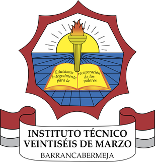

¡Conecta! El gran reto de sexto
Juego por equipos para repasar circuitos eléctricos y curiosidades de la tecnología. Cada equipo responde y acumula puntos.
Lo dirige el docente en clase.
Abrir

Instituto Técnico Veintiséis de Marzo · Barrancabermeja
Aquí están las páginas de estudio de tus clases de Tecnología, Electrónica y Programación. Busca tu grado y abre la de tu materia.
Tecnología · grupos 601, 602 y 603
Juego por equipos para repasar circuitos eléctricos y curiosidades de la tecnología. Cada equipo responde y acumula puntos.
Tecnología · grupos 802 y 803
Las cuatro guías sobre materiales de construcción: clasificación y cerámicas, vidrio y materiales compuestos, impacto ambiental y selección de materiales, y el cierre del periodo. Incluye un cuaderno del proyecto.
AbrirConcurso por equipos con 25 preguntas tomadas de las cuatro guías del periodo.
Énfasis Electrónica (10 ELE) · proyecto transversal «Estación Escolar Inteligente»
Sensores de luz, temperatura y distancia, temporización con millis(), control graduado con PWM e interrupciones, hasta el proyecto integrador. Incluye un cuaderno del proyecto.
AbrirCompuertas, tablas de verdad, álgebra de Boole y simulaciones para traducir problemas cotidianos a circuitos y condiciones para Arduino.
AbrirReformulación técnica del problema de cada grupo, objetivos del proyecto, cronograma coordinado con las otras materias y evaluación final.
AbrirArchivos externos, temporización simulada y el banco de pruebas de escritorio del cierre. Trae un simulador de C++ integrado para ejecutar los retos desde la página.
AbrirÉnfasis Electrónica (11 ELEC)
Teoría del punto de fuga, perspectiva de un punto y perspectiva oblicua de dos puntos, con propósito de aprendizaje y práctica de trazado.
AbrirSesión 1: el transistor como interruptor que Arduino puede controlar. Sesión 2: un sensor de temperatura que activa una alarma. Trabajo en Tinkercad.
AbrirSesión 3: del LED al motor y control de velocidad con PWM. Sesión 4: ventilador inteligente que combina sensor, transistor y motor, con entrega final.
Abrir